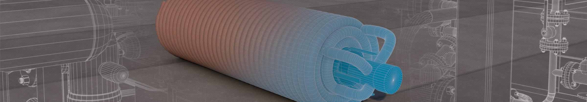
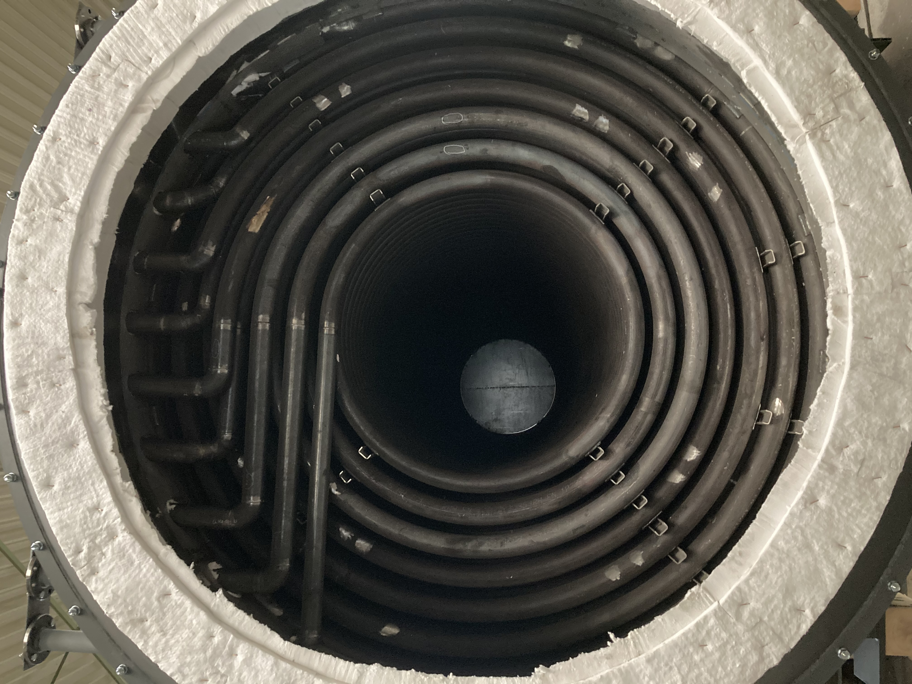
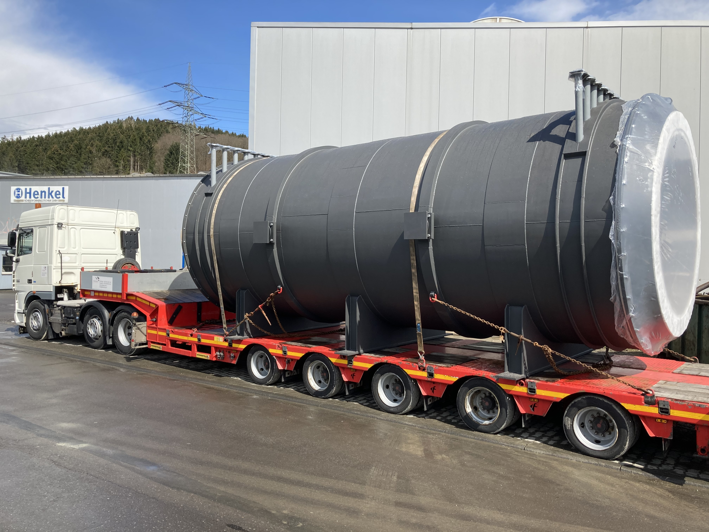
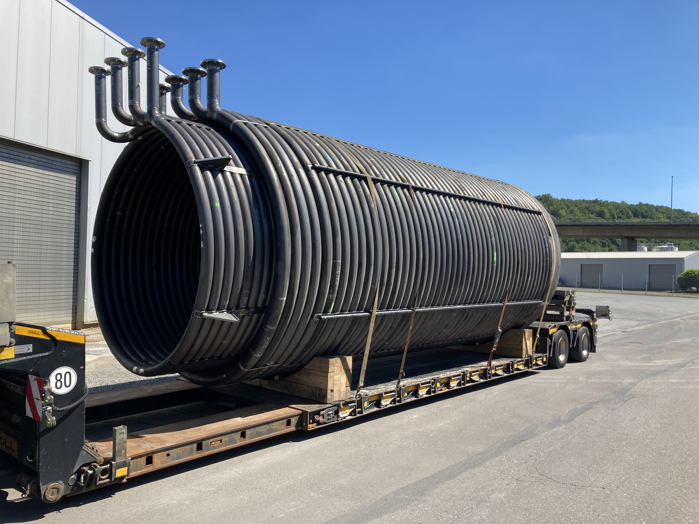
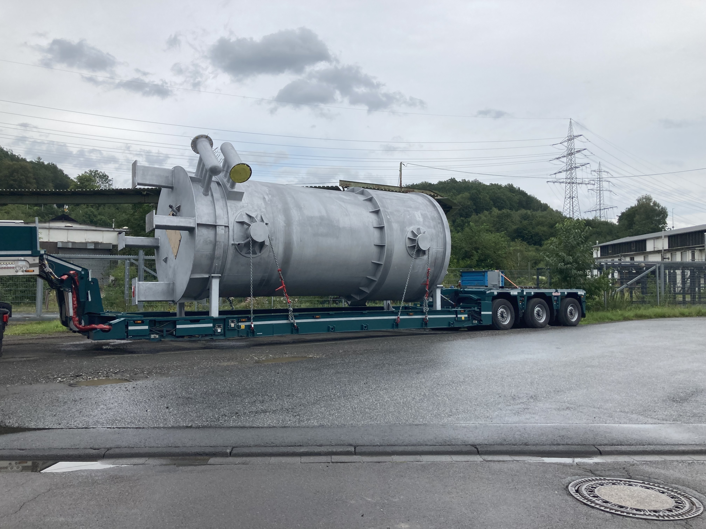
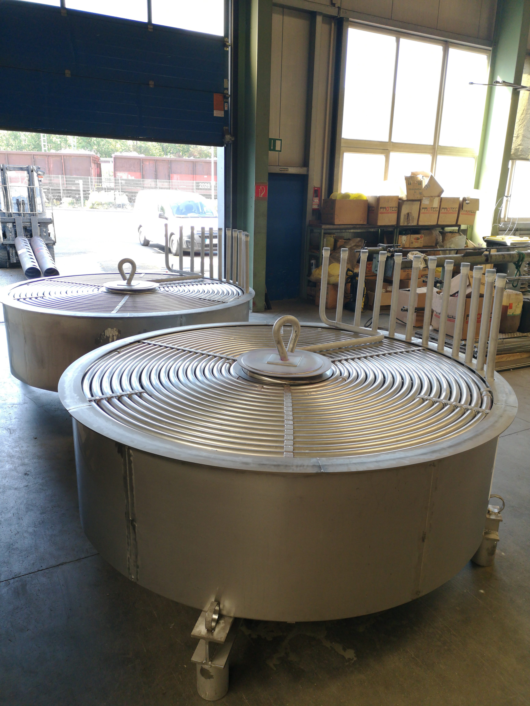
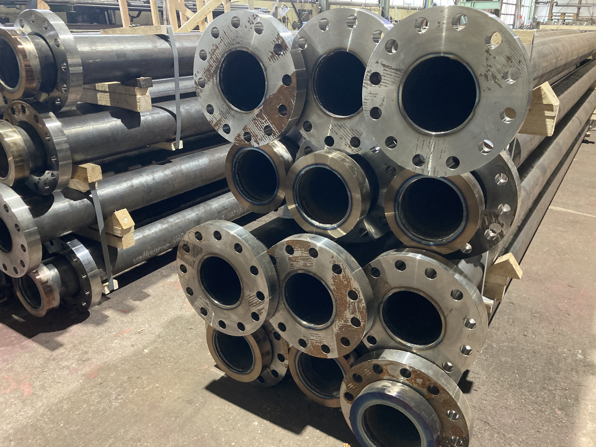

Henkel
Rohrschlangen

IHR LIEFERANT FÜR ROHRSCHLANGEN, WÄRMETAUSCHER UND PROCESS EQUIPMENT
Die Henkel Rohrverformungstechnik fertigt einbaufertige komplexe Rohrschlangensysteme, Komponenten und Schweissteile aus unterschiedlichen Werkstoffen für die chemische und petrochemische Industrie, Wärmerückgewinnungsprozesse, den Anlagen- und Apparatebau sowie für den allgemeinen Rohrleitungsbau.
Auf den folgenden Seiten finden Sie Beispiele für unterschiedliche Bauformen, Anwendungsfälle und Materialien.
Wir stehen für Flexibilität, hohe Qualität und Sachkenntnis, Verläßlichkeit und Termintreue sowie partnerschaftliche und langfristige Beziehungen zu unseren Kunden.
Sprechen Sie uns an!
Produkte:
-Rohrschlangensysteme
Von der Rohrschlange für den Einsatz im Labor bis zum Synthesegaskühler für Raffinerien
Fertigung von einbaufertigen Rohrschlangen und Komponenten:
-
Rohrschlangen einfach oder mehrgängig, Sonderbauformen wie z.B. Rohr-in-Rohr Schlangen
-
Stückgewichte bis ca 40 to
-
Rohrabmessungen von 6mm bis 219,1mm
-
Bis ca. 4,5m Durchmesser
-
unlegierte, niedriglegierte und hochlegierte Stähle sowie Sonderwerkstoffe
Einige Beispiel-Fotos:







-Rohrspiralen
Spiralen fertigen wir als Einzelelemente oder einbaufertige Spiralbündel
-
Spiralebenen mit unterschiedlichen Steigungen
-
Doppelspiralen
-
bis 4m Durchmesser
-
mehrgängige Spiralen
-Rohrbogen/ U Rohrleitungen
Wir biegen U Rohre, Haarnadeln, Rohrmäander bis Rohrdurchmesser 88,9mm
-Rohrleitungsbau
Wir fertigen komplette Leitungen, für Anwendungen im Bergbau, Maschinenverrohrungen sowie Rohrleitungskomponenten für den Anlagenbau, in Abmessungen bis DN 800, auch aus VA und anderen Werkstoffen.
Beispiel-Foto:

-Lohnschweißungen
Wir schweissen im Lohn
-
Einzel- und Serienteile
-
Rohrleitungen, Komponenten, Maschinenverrohrungen
-
wir verarbeiten unterschiedlichste Werkstoffe, auch NE-Metalle
-
wir verfügen aktuell über mehr als 100 Verfahrensprüfungen
-Qualitätssicherung
Wir sind zertifiziert nach AD HP-0 und sind ASME U-Stamp holder.
Branchen:
-Chemie/ Düngemittelindustrie
Bei der Herstellung und Verarbeitung von chemischen Grundstoffen und Gasen kommen die verschiedensten Bauformen und Werkstoffe zum Einsatz.
Ein wichtiger Bereich ist die Herstellung von Salpetersäure nach dem Ostwald-Verfahren.
Für Anlagen der katalytischen Ammoniakverbrennung liefern wir
- Spiralebenen mit einem oder mehreren Wasserwegen, aus unterschiedlichen Werkstoffen, komplett geprüft
- Sammler und Verteiler
- Aussenverrohrungen
- LaMont Düsen
- komplette einbaufertige Spiralbündel
- Reparaturteile
-Petrochemie
Für Teilvergasungsprozesse von Raffinerierückständen in der petrochemischen Industrie liefern wir:
- Synthesegaskühler (für POX-Anlagen nach SHELL-Verfahren) in verschiedenen Bauformen
- allgemeine Gaskühler
- Verrohrungselemente aus Sonderwerkstoffen
-Pharmazie
Für Anlagen der pharmazeutischen Industrie liefern wir:
- komplette Rohrschlangen und Bauelemente aus Sonderwerkstoffen
- auf Wunsch geschliffen oder poliert
-Wärmeerzeugung
Prozesswärmeerzeugung erfolgt häufig durch Thermalölerhitzer
Hierfür liefern wir:
- Rohrschlangensysteme als Heizschlangen bis 12m Länge, 4,5m Durchmesser und Stückgewichte bis 25 to
- ein- oder mehrgängig gebogen
- aus unterschiedlichen Werkstoffen
-Marine/ Offshore
Wir liefern für Wärmesysteme im Schiffbau und für Bohrinseln:
- Rohrschlangen für Wärmerückgewinnung aus Abgasen
- Rohrschlangen für Thermalölerhitzer und komplette Ersatzkessel zur Wärmeversorgung auf Schiffen und Bohrinseln
- Tankbeheizungen
-Rohrleitungsbau
Rohrleitungen für den allgemeinen Anlagenbau, für den Bergbau und Schachtanlagen:
- Rohrleitungen und Komponenten bis DN 800 und PN 160
- Schachtleitungen, Steigeleitungen, Interconnecting Piping
- Rohrleitungselemente für Pumpstationen
- Dehnungsausgleichsrohre
- Verlagerungen, Konsolen und Aussteifungen für Schächte
- zugehöriges Montagematerial
- feuerverzinkt, beschichtet, isoliert
-Stahlerzeugung/ Walzwerk
Für Anlagen der Stahlerzeugung und für Walzwerke liefern wir
- Kühlelemente für Elektroöfen, Ofenhauben, Ofendeckel, Wandsegmente, Ofentüren
- Reparaturen
- Blaslanzen, Spülrohre
- andere Kühlelemente
- Tragrohre (Skid Pipes) für Brammenofen/Hubbalkenofen im Walzwerk
Leistungen:
-
Engineering
-
Auslegung
-
Zeichnungen und Stücklisten
-
Berechnungen und Vorprüfungen
-
Abnahmen, z
erstörende und zerstörungsfreie Prüfungen:
-
folgende Prüfungen führen wir zusammen mit einem unabhängigen Prüflabor durch: RT, MT, PT, VT
-
Abnahmen nach Kundenspezifikation oder Regelwerk auf Basis AD, DGRL, ASME, EN 13445
-
Mechanische Bearbeitung
-
Wärmebehandlung
-
lokales Glühen,
-
Glühen von kompletten Baugruppen
-
Vakuumglühen
-
Oberflächenbehandlung
-
Beizen, Passivieren
-
Verzinken
-
Sandstrahlen, Glasperlenstahlen etc.
-
verschiedene Korrosionsschutzlacke
Unternehmen:
Unser familiengeführtes Unternehmen fertigt seit über 30 Jahren Rohrleitungen und Wärmetauscher. Sie suchen einen Partner, mit dem handwerklich anspruchsvolle Einzelanfertigungen oder Serien zuverlässig realisiert werden können, der Ihre Prozessabläufe versteht und Ihnen Sicherheit durch erfahrene Mitarbeiter, Know How und Planungskompetenz bietet? Sprechen Sie uns an!
Impressum/ Kontakt:
Angaben gem. §5 TMG Betreiber und Kontakt:
Henkel Rohrverformungstechnik GmbH
Setzer Str. 8, 57223 Kreuztal
Telefon: 0271 77349-0
Geschäftsführer: Herr Frithjof Henkel
Handelsregister: Amtsgericht Siegen HRegNr HRB 3263
Umsatzsteuer-ID: DE 126 584 250
Verantwortung für journalistisch-redaktionelle Inhalte gem. §55 II RstV: Frithjof Henkel
Wir vernwenden KEINE cookies und verarbeiten Ihre Daten nicht.
AGB:
PDF-Download----Ansicht im Browser
Anfahrtskizze:
Henkel Rohrverformungstechnik GmbH, Setzer Str. 8, 57223 Kreuztal
Tel. +49 271 773490
Mail: info@henkel-gmbh.de
--Stand: Dezember 2023